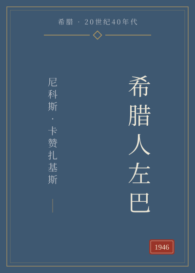
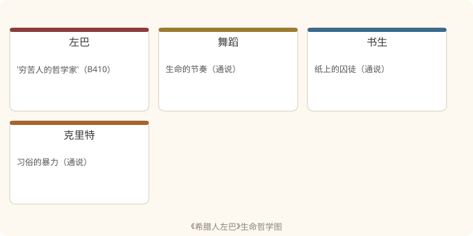

希腊人左巴
一、基本信息
| 作者 | 尼科斯·卡赞扎基斯 |
|---|---|
| 成书/出版 | 1946年（Britannica B410：Zorba the Greek (Víos kai politía tou Aléxi Zormpá, 1946)） Nikos Kazantzakis — Encyclopaedia Britannica（百科全书） |
| 国别/地区 | 希腊 |
| 时代 | 近代 · 20世纪40年代 |
| 体裁 | 长篇小说 |
| 语言 | 希腊语 |

《希腊人左巴》生命哲学图（主题·结构图）
二、创作背景
Britannica（B410）：Zorba——'a portrayal of a passionate lover of life and poor-man's philosopher'（热爱生活的穷苦人哲学家）。
Britannica（B410）：卡赞扎基斯——'a major contribution to modern Greek literature'。
题材（通说待核）：'我'与左巴的克里特褐煤生意——dance 与丧子的酒馆。
三、内容脉络
（通说待核——B410未载剧情）'我'的书记人生与左巴的'自由'哲学。
（通说待核）褐煤的失败与 widow 的私刑。
四、主要人物表
| 人物 | 身份 | 说明 |
|---|---|---|
| 左巴 | 工人/哲学家 | （B410：poor-man's philosopher——名通说待核：阿列克西斯·佐尔巴） |
| '我'（书生） | 雇主 | （通说待核） |
五、主题与艺术特点
- '热爱生活的穷苦人哲学家'（B410）。
- 书与身体（通说待核）。
- 克里特的习俗暴力（通说待核）。
六、影响与评论
- Britannica：'a major contribution to modern Greek literature'（B410）。
Nikos Kazantzakis — Encyclopaedia Britannica（百科全书） - Britannica：1964年电影改编（B410）。
Nikos Kazantzakis — Encyclopaedia Britannica（百科全书）
七、阅读建议
难点
- 克里特习俗（ widow 私刑——通说待核）。
- '左巴舞'的节奏（通说待核）。
- 《希腊人左巴》中译名（《希腊人佐巴》）待核。
- 希腊文原版。
卡赞扎基斯首选；与《基督的最后诱惑》对读。
八、待核实
- 左巴全名（阿列克西斯·佐尔巴——B410书名希腊文含 Zormpá）核对。
- 1946年出版细节待核。
- 1964年电影（Anthony Quinn说）待核。